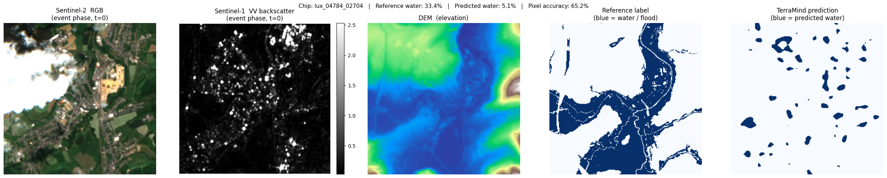
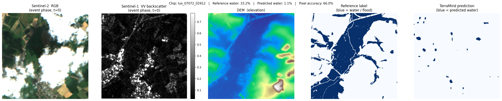
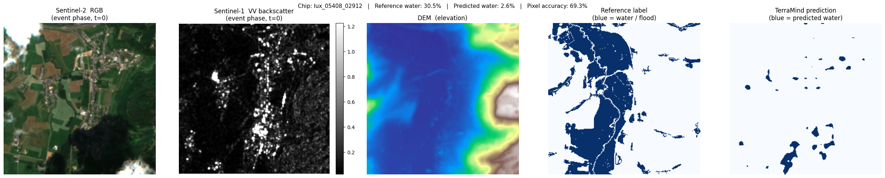
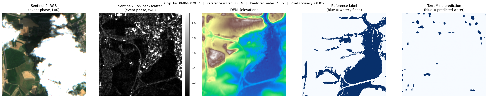
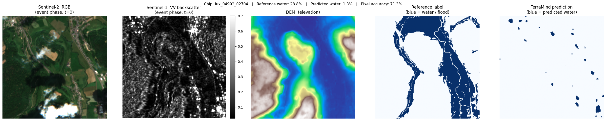

Notebook 3 — Multimodal Inference¶
Author: Eun-Kyeong Kim (eun-kyeong.kim@lxp.lu), LuxProvide S.A
Multimodal Flood Detection with TerraMind on MeluXina HPC¶
Goal: Load the pre-trained TerraMind foundation model, run it on the packaged multi-modal satellite chips prepared in Notebook 2, and visualise the predicted flood / water masks alongside the input imagery.
What you will learn¶
- How to load a PyTorch Lightning checkpoint for inference-only mode
- How to structure multi-modal tensor inputs for TerraMind (
S2L2A,S1RTC,DEM) - How to interpret binary segmentation outputs from a foundation model
- How to read SAR imagery correctly (decibel scale, percentile stretching)
Prerequisites¶
- Notebook 2 must have completed and written its output files to disk.
- A GPU node must be allocated (check with
nvidia-smi).
1 · Environment setup and imports¶
Why reset
sys.argv? PyTorch Lightning parses command-line arguments at import time. When running inside JupyterLab, Jupyter injects internal flags (e.g.-f /run/...) that crash Lightning's argument parser. Resettingsys.argvto a single-element list removes those flags before importing Lightning, so the import succeeds without errors.
import sys
sys.argv = [sys.argv[0]]
import numpy as np
import pandas as pd
import torch
import matplotlib.pyplot as plt
from terratorch.tasks import SemanticSegmentationTask
2 · Configuration¶
Adjust the two paths below if your files live elsewhere. Everything else is derived from what Notebook 2 saved.
# ── Model checkpoint ─────────────────────────────────────────────────────
# Place the downloaded checkpoint file at this path before running.
CKPT_PATH = "ckpt/TerraMind_v1_base_ImpactMesh_flood.pt"
# ── Data paths (must match Notebook 2 outputs) ────────────────────────────
CHIP_CSV = "./data/terramind_flood_lux/package/chip_manifest_multimodal.csv"
S1RTC_NPY = "./data/terramind_flood_lux/package/full_scene/S1RTC_full.npy"
S2L2A_NPY = "./data/terramind_flood_lux/package/full_scene/S2L2A_full.npy"
DEM_NPY = "./data/terramind_flood_lux/package/full_scene/DEM_full.npy"
LABEL_NPY = "./data/terramind_flood_lux/package/full_scene/luxembourg_label_max_flood.npy"
# ── Inference settings ────────────────────────────────────────────────────
# Number of water-rich chips to visualise (higher → longer runtime)
N_CHIPS_TO_SHOW = 5
# Minimum water fraction required for a chip to be selected for display
MIN_WATER_FRACTION = 0.0 # show all water-containing chips if 0
3 · Load the TerraMind model¶
SemanticSegmentationTask is a PyTorch Lightning wrapper around the TerraMind
encoder + segmentation head. We load it from a checkpoint (.pt file) and
immediately switch to evaluation mode.
load_from_checkpoint(..., strict=False)— ignores checkpoint keys that do not match the current model definition (e.g., saved logger settings from training)..cuda()— moves the model to GPU memory..eval()— disables dropout and batch-normalisation updates.
print("Loading TerraMind model from checkpoint...")
try:
# strict=False tolerates minor mismatches between the saved checkpoint
# and the installed terratorch version (e.g., extra logger config keys).
task = SemanticSegmentationTask.load_from_checkpoint(CKPT_PATH, strict=False)
model = task.model.cuda().eval()
print("Model ready on GPU.")
except Exception as err:
print(f"ERROR: Could not load checkpoint.\n {err}")
raise
Loading TerraMind model from checkpoint...
2026-04-15 08:39:47,713 - INFO - HTTP Request: HEAD https://huggingface.co/ibm-esa-geospatial/TerraMind-1.0-base/resolve/main/TerraMind_v1_base.pt "HTTP/1.1 302 Found"
Model ready on GPU.
4 · Load the packaged satellite data¶
We memory-map the .npy arrays — this means the files are not fully loaded
into RAM immediately. Only the pixel windows we actually slice will be read from
disk during inference, keeping memory use low.
Array shapes (from Notebook 2):
s1rtc : (2, 4, H, W) — S1 [VV, VH] over 4 temporal phases
s2l2a : (12, 4, H, W) — S2 12 bands over 4 temporal phases
dem : (1, H, W) — elevation (static)
label : (H, W) — reference water/flood mask
chip_df = pd.read_csv(CHIP_CSV)
s1rtc = np.load(S1RTC_NPY, mmap_mode="r")
s2l2a = np.load(S2L2A_NPY, mmap_mode="r")
dem = np.load(DEM_NPY, mmap_mode="r")
label = np.load(LABEL_NPY)
print(f"Chip index : {len(chip_df)} chips")
print(f"S1RTC shape : {s1rtc.shape} (bands, time-steps, H, W)")
print(f"S2L2A shape : {s2l2a.shape} (bands, time-steps, H, W)")
print(f"DEM shape : {dem.shape} (1 channel, H, W)")
print(f"Label shape : {label.shape}")
Chip index : 890 chips
S1RTC shape : (2, 4, 8449, 6033) (bands, time-steps, H, W)
S2L2A shape : (12, 4, 8449, 6033) (bands, time-steps, H, W)
DEM shape : (1, 8449, 6033) (1 channel, H, W)
Label shape : (8449, 6033)
5 · Select chips with the most water¶
We use the reference flood label to rank chips by the fraction of water pixels they contain. Selecting the most water-rich chips lets us evaluate whether the model correctly identifies flooded areas — the most scientifically interesting locations to examine.
Note: The reference label includes both permanent water bodies (rivers, lakes) and event flood water. We use it here solely as a spatial guide to find interesting chips — not as a strict accuracy benchmark for "flood-only" detection.
def compute_water_fraction(row: pd.Series) -> float:
"""Return the fraction of pixels labelled as water in a chip.
A value of 0.0 means the chip is entirely land; 1.0 means entirely water.
"""
r0, r1, c0, c1 = row["row0"], row["row1"], row["col0"], row["col1"]
chip_label = label[r0:r1, c0:c1]
return float((chip_label == 1).mean())
print("Computing water fractions for all chips...")
chip_df["water_fraction"] = chip_df.apply(compute_water_fraction, axis=1)
# Keep only chips that contain some water; rank by water fraction (highest first)
water_chips = (
chip_df[chip_df["water_fraction"] > MIN_WATER_FRACTION]
.sort_values("water_fraction", ascending=False)
.head(N_CHIPS_TO_SHOW)
)
print(f"Selected {len(water_chips)} chip(s) for inference and visualisation.")
water_chips[["chip_id", "row0", "col0", "chip_valid_fraction", "water_fraction"]]
Computing water fractions for all chips...
Selected 5 chip(s) for inference and visualisation.
| chip_id | row0 | col0 | chip_valid_fraction | water_fraction | |
|---|---|---|---|---|---|
| 577 | lux_04784_02704 | 4784 | 2704 | 1.0 | 0.333755 |
| 863 | lux_07072_02912 | 7072 | 2912 | 1.0 | 0.332062 |
| 656 | lux_05408_02912 | 5408 | 2912 | 1.0 | 0.305328 |
| 838 | lux_06864_02912 | 6864 | 2912 | 1.0 | 0.304749 |
| 603 | lux_04992_02704 | 4992 | 2704 | 1.0 | 0.287750 |
6 · Multimodal inference function¶
This function performs one forward pass of TerraMind on a single chip.
Tensor layout¶
TerraMind expects every modality as a 5-D tensor:
[Batch, Channels, Time, Height, Width]
| Modality | Channels | Time steps | Tensor shape |
|---|---|---|---|
| S2 optical | 12 | 4 | [1, 12, 4, 256, 256] |
| S1 SAR | 2 | 4 | [1, 2, 4, 256, 256] |
| DEM elevation | 1 | 4* | [1, 1, 4, 256, 256] |
** DEM is static — it has no real time axis. We repeat it 4× along the time dimension so the model receives a consistent 5-D tensor for all modalities.
Why torch.no_grad()?¶
During training, PyTorch records gradients for every operation. At inference time
we do not need gradients, so torch.no_grad() skips that bookkeeping — making
inference faster and using ~half the GPU memory.
def run_inference_on_chip(row: pd.Series):
"""Slice chip from global arrays, run TerraMind, return results for plotting.
Parameters
----------
row : one row from the chip manifest DataFrame
Returns
-------
s2_rgb : (3, 256, 256) float32 — S2 true-colour bands for visualisation
s1_vv : (256, 256) float32 — S1 VV backscatter (linear scale)
dem_chip : (256, 256) float32 — elevation
ref_chip : (256, 256) uint8 — reference water label
pred : (256, 256) int — model prediction (1=water, 0=land)
"""
r0, r1, c0, c1 = row["row0"], row["row1"], row["col0"], row["col1"]
# ── Slice chips from memory-mapped arrays ─────────────────────────────
# Arrays are (C, T, H, W); slicing H and W gives (C, T, chip_H, chip_W)
# S2 optical: [C=12, T=4, 256, 256] → add batch dim → [1, 12, 4, 256, 256]
s2_tensor = (torch.from_numpy(s2l2a[:, :, r0:r1, c0:c1].copy())
.float().unsqueeze(0).cuda())
# S1 SAR: [C=2, T=4, 256, 256] → add batch dim → [1, 2, 4, 256, 256]
s1_tensor = (torch.from_numpy(s1rtc[:, :, r0:r1, c0:c1].copy())
.float().unsqueeze(0).cuda())
# DEM: [C=1, 256, 256]
# → unsqueeze(0) → [1, 1, 256, 256]
# → unsqueeze(2) → [1, 1, 1, 256, 256] (insert time axis)
# → repeat(...) → [1, 1, 4, 256, 256] (replicate across time)
dem_tensor = (torch.from_numpy(dem[:, r0:r1, c0:c1].copy())
.float().unsqueeze(0).unsqueeze(2)
.repeat(1, 1, 4, 1, 1).cuda())
# ── Forward pass ─────────────────────────────────────────────────────
multimodal_input = {"S2L2A": s2_tensor, "S1RTC": s1_tensor, "DEM": dem_tensor}
with torch.no_grad():
model_output = model(multimodal_input)
# The model returns a named output object; extract the logits tensor.
# Shape: [1, num_classes, H, W] (num_classes = 2: land vs water)
logits = model_output.output if hasattr(model_output, "output") else model_output
# Argmax over the class dimension → binary mask: 1 = water, 0 = land
# Shape: [256, 256] as a NumPy array
pred_mask = torch.argmax(logits, dim=1).squeeze().cpu().numpy()
# ── Extract visualisation layers ──────────────────────────────────────
# S2 true-colour: bands B04/B03/B02 (indices 3, 2, 1) at time-step 0
s2_rgb = s2_tensor[0, [3, 2, 1], 0].cpu().numpy() # (3, 256, 256)
# S1 VV at time-step 0 (linear scale — convert to dB for display later)
s1_vv = s1_tensor[0, 0, 0].cpu().numpy() # (256, 256)
# DEM and reference label (already NumPy; slice directly)
dem_chip = dem[0, r0:r1, c0:c1] # (256, 256)
ref_chip = label[r0:r1, c0:c1] # (256, 256)
return s2_rgb, s1_vv, dem_chip, ref_chip, pred_mask
7 · Run inference and visualise results¶
For each selected chip we display five panels:
| Panel | Description |
|---|---|
| S2 RGB | True-colour composite (bands B04/B03/B02). Cloud-free, natural colours. |
| S1 VV (dB) | SAR backscatter in decibels. Water = very dark (specular reflection). |
| DEM | Terrain elevation — low-lying areas near rivers are flood-prone. |
| Reference label | Copernicus EMS flood extent (blue = water). Ground truth proxy. |
| TerraMind prediction | Model output (blue = predicted water). Compare with the reference. |
SAR visualisation tip: SAR images contain extremely bright outliers (metal roofs, corner reflectors). Displaying the raw values makes the image look entirely black. We apply percentile stretching — clipping at the 2nd and 98th percentiles — to reveal the terrain texture and make specular reflectors (water) visible as dark patches.
print(f"Running TerraMind inference on {len(water_chips)} chip(s)...\n")
for _, chip_row in water_chips.iterrows():
chip_id = chip_row["chip_id"]
water_pct = chip_row["water_fraction"] * 100
s2_rgb, s1_vv, dem_chip, ref_chip, pred_mask = run_inference_on_chip(chip_row)
# ── Prepare S2 display: divide by 3000 to approximate surface reflectance
s2_display = np.clip(s2_rgb.transpose(1, 2, 0) / 3000, 0, 1)
# ── Prepare S1 display: percentile-stretch to handle bright scatterers
vv_lo, vv_hi = np.percentile(s1_vv, 2), np.percentile(s1_vv, 98)
# ── Compute simple accuracy metrics for this chip ─────────────────────
# (pixel-level agreement between reference label and prediction)
valid_px = (ref_chip >= 0) # all pixels are labelled here
accuracy = float((pred_mask[valid_px] == ref_chip[valid_px]).mean())
pred_water = float(pred_mask.mean())
ref_water = float(ref_chip.mean())
fig, axes = plt.subplots(1, 5, figsize=(25, 5))
fig.suptitle(
f"Chip: {chip_id} | Reference water: {water_pct:.1f}% | "
f"Predicted water: {pred_water*100:.1f}% | Pixel accuracy: {accuracy*100:.1f}%",
fontsize=11,
)
# Panel 1 — S2 RGB
axes[0].imshow(s2_display)
axes[0].set_title("Sentinel-2 RGB\n(event phase, t=0)")
axes[0].axis("off")
# Panel 2 — S1 VV in dB (percentile-stretched)
im_s1 = axes[1].imshow(s1_vv, cmap="gray", vmin=vv_lo, vmax=vv_hi)
axes[1].set_title("Sentinel-1 VV backscatter\n(event phase, t=0)")
axes[1].axis("off")
plt.colorbar(im_s1, ax=axes[1], fraction=0.046, pad=0.04)
# Panel 3 — DEM
axes[2].imshow(dem_chip, cmap="terrain")
axes[2].set_title("DEM (elevation)")
axes[2].axis("off")
# Panel 4 — Reference label
axes[3].imshow(ref_chip, cmap="Blues", vmin=0, vmax=1)
axes[3].set_title("Reference label\n(blue = water / flood)")
axes[3].axis("off")
# Panel 5 — TerraMind prediction
axes[4].imshow(pred_mask, cmap="Blues", vmin=0, vmax=1)
axes[4].set_title("TerraMind prediction\n(blue = predicted water)")
axes[4].axis("off")
plt.tight_layout()
plt.show()
print(f" {chip_id}: ref {ref_water*100:.1f}% water → pred {pred_water*100:.1f}% "
f"(accuracy {accuracy*100:.1f}%)\n")
Running TerraMind inference on 5 chip(s)...

lux_04784_02704: ref 33.4% water → pred 5.1% (accuracy 65.2%)

lux_07072_02912: ref 33.2% water → pred 1.1% (accuracy 66.0%)

lux_05408_02912: ref 30.5% water → pred 2.6% (accuracy 69.3%)

lux_06864_02912: ref 30.5% water → pred 2.1% (accuracy 68.0%)

lux_04992_02704: ref 28.8% water → pred 1.3% (accuracy 71.3%)